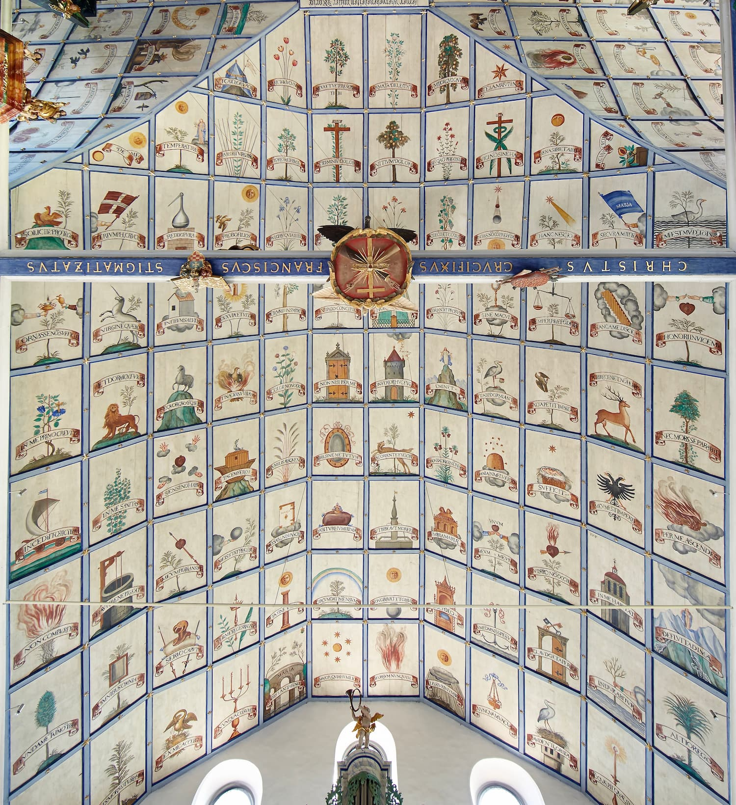

Station 2 – Zeichen am Himmel
Hebe deinen Blick.
Der Himmel der Kirche ist voller Zeichen. Manche Menschen sehen nur Bilder. Andere entdecken darin Hinweise.
Suche im Bilderhimmel nach einem Zeichen, das Orientierung geben könnte. Was passt am besten?

← Zurück zur Schnitzeljagd